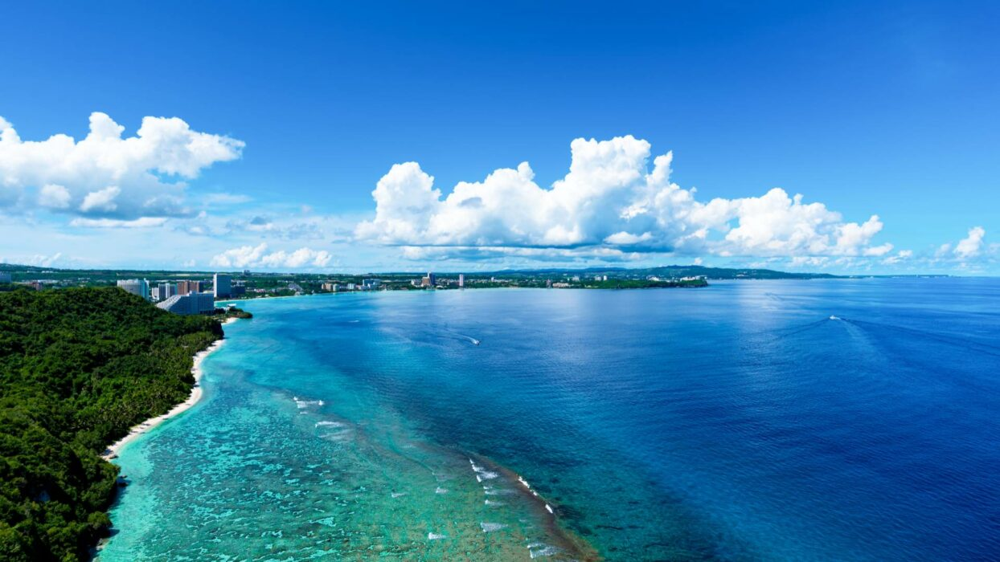
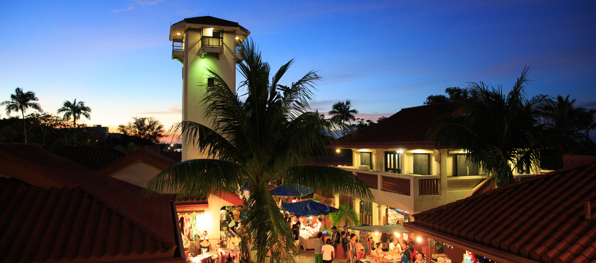

Top three activities to do on Guam

Tumon Bay
Take a dip in the ocean, grab some food, or take up some paddleboarding lessons!

Live Entertainment
If you are in the market for a great experience, look no further! The Karera live performance is a sight to see.

Chamorro Village
Check out some local vendors, grab some dinner, and enjoy the festivities at the weekly night market